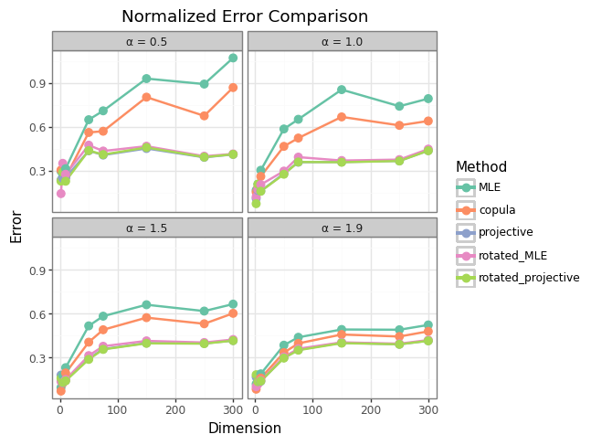
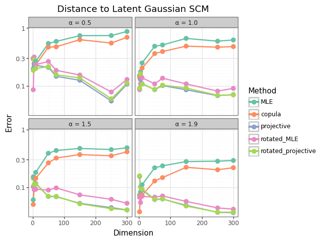

Normalized Projective Estimator
Procedure
The procedure for the normalized projective estimator is as follows. Given a matrix of (stable) observations \(\mathbf X = [X_{*,1}, \dots, X_{*,d}] \in \mathbb R^{n \times d}\) with each row representing a distinct realization and each of the \(d\) columns a dimension of the dataset:
- Estimate marginal parameters of each column \(X_{*,j}\) \(j=1, \dots, d\) via univariate stable MLE.
- Center each margin by subtracting its location paramter estimate: \(X_{*,j}^{(c)} = X_{*,j} - \mu_j^{MLE}\)
- Normalize each observation by its Euclidean norm: \(\tilde X_{i,*} = X_{i,*}^{(c)}/\|X_{i,*}^{(c)}\|\), \(i = 1, \dots, n\)
- Rescale the data by the square root of the sum of the latent marginal variances (aka the the sum of the squared scale paramters in the stable parameterization scaled by \(\sqrt 2\) to match conventional Gaussian parameterization). \(\tilde{\mathbf G} = \sqrt d \bar \sigma\tilde{ \mathbf X}\), where \(\bar \sigma = \bigg(\frac{2}{d}\sum_{j=1}^d {\gamma_j^{MLE}}^2\bigg)^{1/2}\).
- The dispersion matrix estimate is the sample covariance matrix of \(\tilde{\mathbf G}\): \(\hat \Sigma = \frac{1}{n}\tilde{\mathbf G}^{\top}\tilde{\mathbf G}\)
Note that this doesn’t rely on the fact that \(X\) is stable, and would hold for any so-called “Gaussian scale mixture/scale mixture of normals/normal variance-mean mixture”, including a multivariate t distribution and generalized hyperbolic distribution, as long as we can estimate marginal scale and location paramters. These might provide some interesting opportunities to compare this estimator against more common and nicely-behaved estimators with closed forms, etc.
In special cases (like if we can already assume \(\mu\)=0, and want to estimate the correlation matrix so that \(\bar \sigma = 1\)), we don’t even need to estimate the marginal distributions.
Benchmarking vs. Rotated MLE
I tested this estimator against prior aproaches as well as the “Rotated MLE” approach of estimating eigenvectors using the normalized sample covariance matrix and then rotating to the eigenbasis to estimate the eigenvalues along the coordinate axes via stable MLE. The parameters used were:
n_samples = [100, 200, 500, 1000, 2500, 5000]
dimensions = [2, 5, 10, 50, 75, 150, 250, 300]
alphas = [0.5, 1.0, 1.5, 1.9] Interestingly, these two approaches perform extremely similarly:

Both approaches provide a huge improvement over state-of-the-art MLE. And both show convergence to the latent Gaussian sample covariance matrix:

The Normalized Projective approach does seem to edge out Rotated MLE in most cases, however. Comparing the two approaches, the eigenvectors of the two estimates will always be identical (since they’re both based on normalization), so the differences boil down to eigenvalue estimation. Stable MLE is a bit of a black box, so it’s possible that if error in scale estimates is increasing in the magnitude of the scale but very nonlinear, doing estimation along the principal axes makes these estimates more error-prone because the error increase in the largest eigenvalue estimate is more than the error reduction in the smallest. Since the projective method estimates scale along the original coordinate axes, these are arbitrary but perhaps lower error. I’m not convinced this is actually what’s going on since I’d expect this edge to disappear as \(\alpha\) increases.
Nevertheless, this led to the idea – “Rotated Projective” – of rotating to a new basis with approximately equal scale in all coordinate directions (this should be the minimum error estimate). Since the projective approach only needs to estimate \(\text{Tr}(\Sigma)\), which is invariant under rotations, this approach should work reasonably well, even if the rotation isn’t optimal.
In simulation, the Rotated Projective Estimator does seem to edge out the others (at least in total error), but not by much (this advantage is so small that on the plots above, it covers the projective approach). Some of this may be because the eigenvalues of the true covariance matrices being used for simulation are uniformly distributed. Inutitively, the equi-scale rotation should do best when there’s a big difference between top and bottom eigenvalues. I’m taking a closer look at more of a spiked covariance model. It’s possible that a sufficiently spiked model will break the assumptions of the Projective approach too much (see Explanation below).
But this approach of rotating to an approximately equi-scale basis and doing MLE in that basis should be doable for the Rotated MLE approach as well.
Working on these are the next steps…
Explanation
Starting off, let \(X\) be an \(\alpha\)-stable sub-Gaussian random vector in \(\mathbb R^d\) with dispersion matrix \(\Sigma \in \mathbb R^{d \times d}\). WLOG, assume \(X\) is centered at the origin (if not, it can be centered first).
Using the subordinator representation, we can write \(X=\sqrt W G\) in the usual way with \(W \in \mathbb R^+\) a maximally skewed positive \(\alpha/2\)-stable subordinator and \(G \sim N(0, \Sigma)\) independent of W. Assume that \(\Sigma\) is “well-behaved” in the sense that it is positive definite and its eigenvalues \(\lambda_i\) \(i=1, \dots d\) are uniformly bounded so that there exist constants \(m, M >0\) independent of \(d\) such that \(m \leq \lambda_i \leq M\) for all \(i\). (These assumptions are probably a little too restrictive – particularly the full rank aspect, but it simplifies the argument).
From the eigendecomposition of \(\Sigma\), we can write \(\Sigma = O\Lambda O^\top = O\Lambda^{1/2}\Lambda^{1/2} O^\top\). Call \(\Sigma^{1/2} :=O\Lambda^{1/2}\). Let \(Z \sim N(0, I_d)\) so that \(G = \Sigma^{1/2}Z\).
Then we can write:
\[ \begin{aligned} \frac{X}{\|X\|} = \frac{\sqrt WG}{\|\sqrt WG\|} = \frac{\sqrt WG}{\|\sqrt W\Sigma^{1/2}Z\|} &= \frac{\sqrt WG}{\sqrt W\|O\Lambda^{1/2}Z\|}\\ &= \frac{G}{\|\Lambda^{1/2}Z\|} \end{aligned} \]
Looking at terms in the denominator:
\[ \begin{aligned} \frac{1}{d}\|\Lambda^{1/2}Z\|^2 & = \frac{1}{d} \sum_{i=1}^d \lambda_i Z_i^2 \\ &= \frac{1}{d}\sum_{i=1}^d (\lambda_i Z_i^2 - \lambda_i + \lambda_i)\\ &= \frac{1}{d}\sum_{i=1}^d \lambda_i(Z_i^2 - 1)+ \frac{1}{d}\sum_{i=1}^d \lambda_i \\ &\underset{d \rightarrow \infty}{\overset{\text{a.s.}}{\longrightarrow}} 0+\frac{1}{d}\sum_{i=1}^d \lambda_i \\ &= \frac{1}{d}\text{Tr}(\Sigma) \\ &= \bar{\sigma}^2 \end{aligned} \]
The argument that \(\frac{1}{d}\sum_{i=1}^d \lambda_i(Z_i^2 - 1)\underset{d \rightarrow \infty}{\overset{\text{a.s.}}{\longrightarrow}} 0\) follows from Kolmogorov’s Criterion for the SLLN with independent but non-identically distributed random variables, since the sufficient conditions \(Y_i:= \lambda_i(Z_i^2 - 1)\), \(\mathbb E Y=0\) and \(\sum_i^\infty \text{Var}(Y_i)/i^2 = \sum_i^\infty 2\lambda_i^2/i^2 \leq \sum_i^\infty 2M^2/i^2 =2M^2\frac{\pi^2}{6}<\infty\) are met.
Here, \(\bar{\sigma}^2\) is the average variance of the components of \(G\). Applying the continuous mapping theorem, we get \(\frac{1}{d}\|\Lambda^{1/2}Z\|^2 \underset{d \rightarrow \infty}{\overset{\text{a.s.}}{\longrightarrow}} \bar{\sigma}^2 \implies \frac{\|\Lambda^{1/2}Z\|}{\sqrt d}\underset{d \rightarrow \infty}{\overset{\text{a.s.}}{\longrightarrow}}\bar{\sigma}\).
Note for any fixed indices \(i,j\), the bivariate vector elliptical vector \((X_i, X_j)\) doesn’t depend on \(d\), nor does the corresponding latent Gaussian bivariate vector \((G_i, G_j)\) – (the same is true for arbitrary fixed dimension \(k\)). In other words, the components are the marginal distributions, and don’t change by adding more dimensions to the vector.
Putting this all together, we get:
\[ \begin{aligned} \frac{(X_i, X_j)}{\|X\|} &= \frac{(G_i, G_j)}{\|\Lambda^{1/2}Z\|} \underset{d \rightarrow \infty}{\overset{\text{a.s.}}{\longrightarrow}} \frac{(G_i, G_j)}{\sqrt d \bar \sigma} \\ \implies &\sqrt d \bar \sigma \frac{(X_i, X_j)}{\|X\|} \underset{d \rightarrow \infty}{\overset{\text{a.s.}}{\longrightarrow}} (G_i, G_j) \end{aligned} \]
Now, consider that for the full vector \(G\), we can write: \[ \mathbb E [GG^\top] = \begin{pmatrix} \mathbb{E}[G_1^2] & \mathbb{E}[G_1G_2] & \cdots & \mathbb{E}[G_1G_d] \\ \mathbb{E}[G_2G_1] & \mathbb{E}[G_2^2] & \cdots & \mathbb{E}[G_2G_d] \\ \vdots & \vdots & \ddots & \vdots \\ \mathbb{E}[G_dG_1] & \mathbb{E}[G_dG_2] & \cdots & \mathbb{E}[G_d^2] \end{pmatrix} \]
So that we can recover \(\mathbb E [GG^\top] = \Sigma\) without ever looking at more than two components of \(G\) at a time. While the matrix \(\Sigma\) clearly grows with \(d\), each entry is independent of the ambient dimension.
Note that \((\frac{Z_i}{\|Z\|})^2\) \(i=1, \dots, d\) is uniformly integrable, since in the uncorrelated case, a uniform random variable on the sphere \(\mathbb S^{d-1}\) must satisfy \(\sum_{i=1}^d (\frac{Z_i}{\|Z\|})^2=1\) and by symmetry \(\mathbb E(\frac{Z_i}{\|Z\|})^2=\frac{1}{d}\). So \(\mathbb E(\sqrt d \frac{Z_i}{\|Z\|})^2=1\) and doesn’t depend on d. Since the eigenvalues of the covariance matrix are uniformly bounded and independent of \(d\), \((\frac{\sqrt d X_i}{\|X\|})^2\overset{\text{a.s.}}{=}(\frac{\sqrt d G_i}{\|G\|})^2\) are also uniformly integrable.
Then for any fixed \(i,j \leq d\), \((\frac{\sqrt d X_i}{\|X\|}\frac{\sqrt d X_j}{\|X\|})\) is also uniformly integrable (since it’s bounded above by \(\max\{(\frac{\sqrt d X_i}{\|X\|})^2,(\frac{\sqrt d X_j}{\|X\|})^2\}\), and the following interchange of limits and expectation is warranted. : \[ \lim_{d\to\infty} \mathbb{E}\!\left[d\,\bar{\sigma}^2\,\frac{X_i}{\|X\|}\frac{X_j}{\|X\|}\right] = \mathbb{E}\!\left[ \bar{\sigma}^2\,\lim_{d\to\infty}d\,\frac{X_i}{\|X\|}\frac{X_j}{\|X\|}\right] = \mathbb{E}[G_iG_j] = \Sigma_{i,j} \]
Since this quantity doesn’t depend on \(d\), this shows that \[ d\,\bar{\sigma}^2\,\mathbb{E}\!\left[\frac{X}{\|X\|}\frac{X}{\|X\|}^\top\right] \to \mathbb{E}[GG^\top] = \Sigma \]
in the sense that every finite block converges entrywise.
Error Bounds
The fact that the denominator in the normalized vector simplifies to a Gaussian vector norm (almost surely) means that we should be able to apply standard quadratic form conentration bounds (e.g. Hanson-Wright) to determine the impact of this Gaussian approximation in finite dimensions (e.g. how close can we get to recovering the sample covariance matrix of the latent Gaussian vector).
If we’re interested in how much error this approximation adds to the process, a reasonable thing to look at might be the probability of a large distance between the estimator versus the latent Gaussian sample covariance matrix, \(\Sigma_G\) (if it were observable). This simplifies to:
[Need to add more details, but this simplifies to a quadratic form that one can apply Hanson-Wright to (Vershynin Thm 6.2.1) to show this error has sub-Gaussian concentration for small deviations. This explains the rapid convergence to the latent Gaussian SCM in my simulations.]